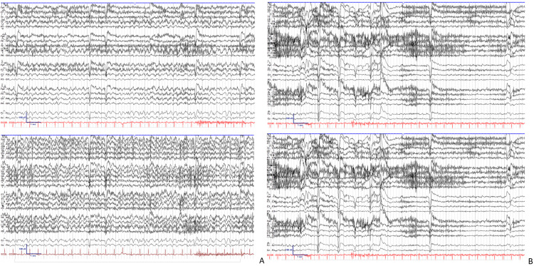

Status convulsivo (tônico-clônico) carrega os tempos 5 e 30.
3. Status não convulsivo
Crises de ausência e focais também podem evoluir para estado de mal. Quando ausência, focal ou confusão mental prolongada constituem o quadro, fala-se em status não convulsivo. De forma geral, o não convulsivo tem melhor prognóstico relativo. Com menor evidência: tempo 1 ≈ 10 minutos; tempo 2 ≈ 40 minutos.
⚡ Convulsivo (TCG)
5 : 30
T1 = 5 min (atuar) T2 = 30 min (lesão) Mais comum · mais estudado
🔵 Não convulsivo
≈10 : ≈40
Ausência · focal · confusão Menor evidência nos tempos Melhor prognóstico relativo
Canon da fonte: não-convulsivo ≈ 10 / ≈ 40 (menor evidência). ILAE 2015 / HC-UFMG 2025 (focal): t1 = 10 min; t2 = 60 min (ausência: t2 incerto). Mantém-se o mapa da fonte no corpo; a prova de hospital top pode cobrar 10/60. Não fundir com o 5/30 do TCG.
4. O que se ensina no absoluto
Em termos absolutos de ensino e prática, trabalha-se com 5:30, porque o TCG convulsivo é o mais comum. A ressalva do não convulsivo deve ser sabida — não se funde num único número como se fosse lei igual ao 5/30.
Tipo
Exemplos
T1
T2
Prognóstico
Convulsivo
TCG
5 min
30 min
Referência / mais comum
Não convulsivo
Ausência, focal, confusão
≈ 10 min
≈ 40 min (fonte) · 60 ILAE focal
Melhor (menor evidência)
Na prática ensina-se 5:30 — saiba a ressalva.

EEG de status de ausência (não convulsivo): ritmo 3–4 Hz generalizado em A; resolução em B. Banerjee et al. 2024 · Cureus · CC BY 4.0 · PMC11330277. não convulsivo · confusão
⚠️ Não confunda
5:30 do TCG ≠ 10/40 (ou 10/60) do não-convulsivo. São mapas paralelos, não sinônimos.
Por que importa
Não fundir 10/40 em lei igual a 5/30; não apagar o não-convulsivo.
📌 Resumo operacional
Convulsivo (TCG) = 5:30. Não-conv ≈ 10 / 40 (menor evidência; melhor prognóstico relativo). Na prática ensina-se 5:30.
🧠 Quiz
Q1. Status de ausência / confusão prolongada. Sobre tempos: